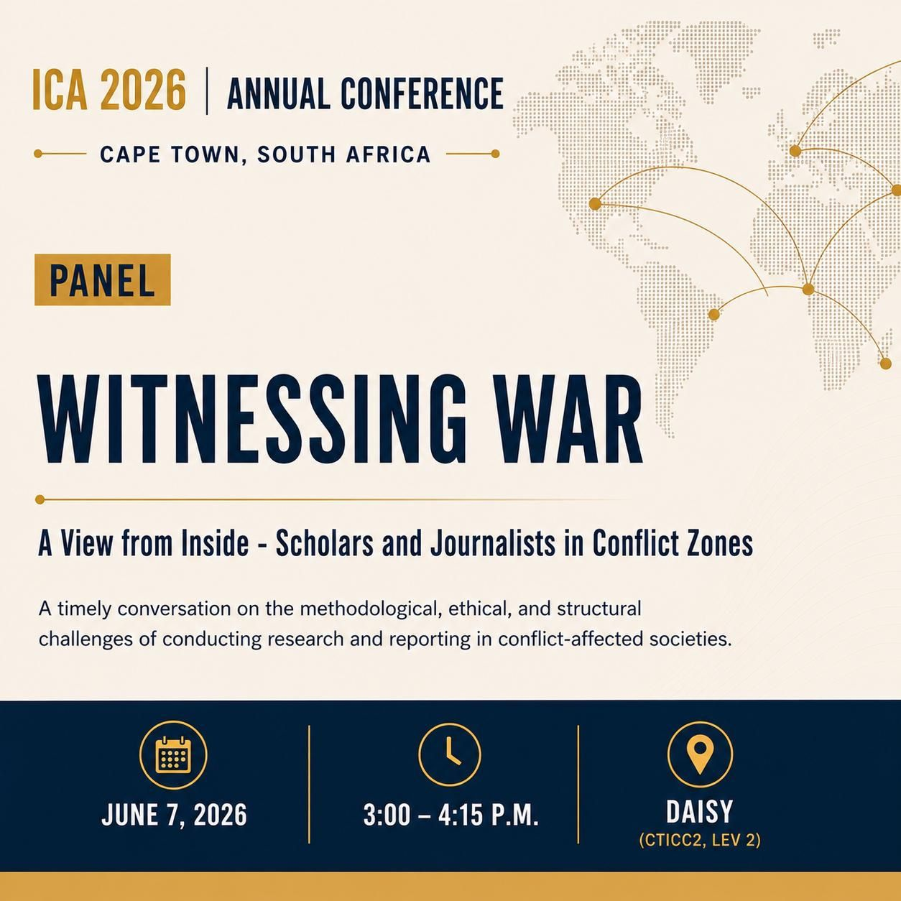
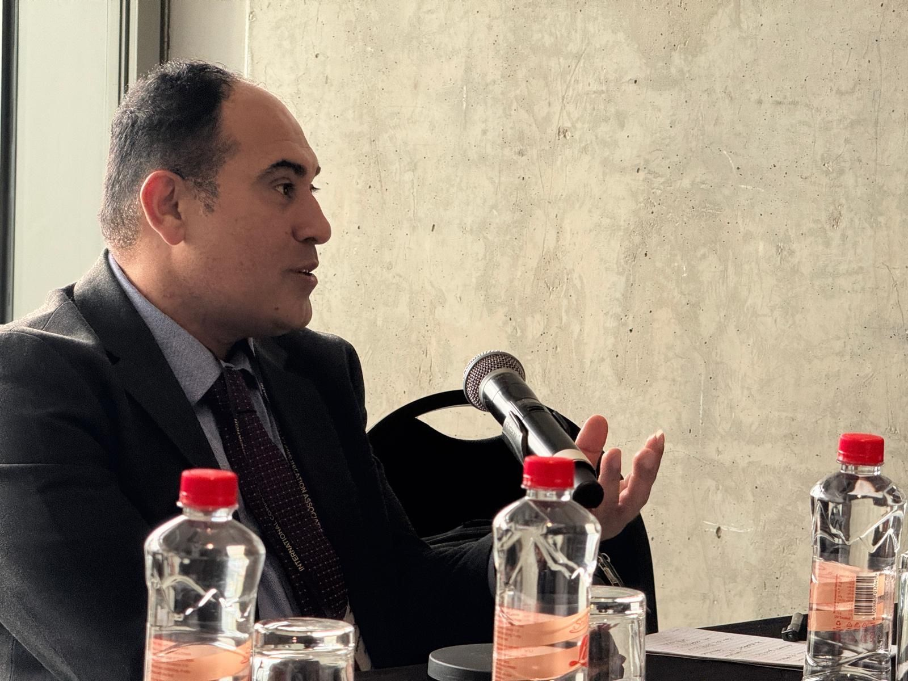
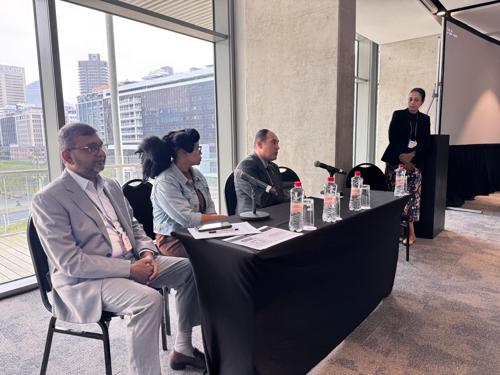
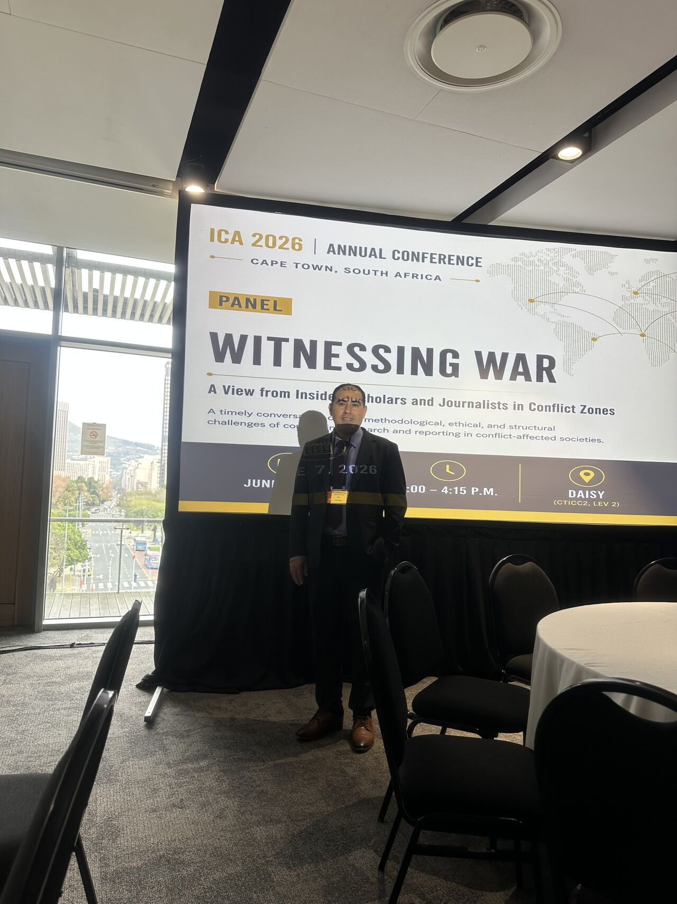
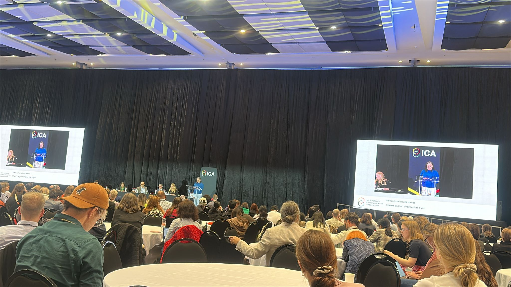
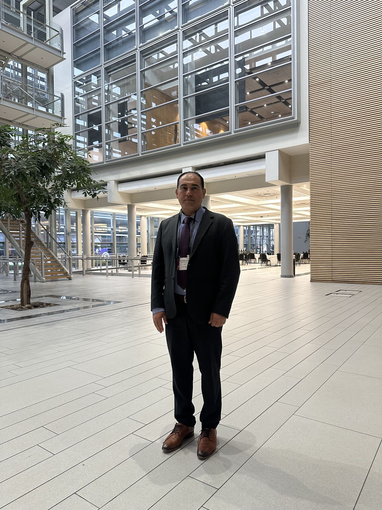

Conferences & Events
Dr. Wesam Amer Presents Research on Knowledge Destruction, Journalism, and Higher Education in Palestine at ICA 2026
Dr. Wesam Amer participated in the International Communication Association (ICA) 2026 Conference in Cape Town, South Africa, presenting three research papers on the destruction of knowledge, media, and intellectual life in Palestine. His presentations contributed to international debates on communication, journalism, academic freedom, and the protection of knowledge during conflict.
Dr. Wesam Amer participated in the 76th Annual Conference of the International Communication Association (ICA 2026), held in Cape Town, South Africa, where he presented a series of research papers examining the impact of conflict on knowledge production, journalism, and higher education in Palestine. The conference, one of the world's leading gatherings of communication scholars, was held under the theme "Communication and Inequalities in Context."
A central focus of Dr. Amer's participation was a paper exploring the concept of scholasticide, which he examined as a process that extends beyond the destruction of schools and universities. The research argued that attacks on knowledge systems also encompass journalists, media institutions, archives, libraries, and cultural infrastructures. According to the study, the targeting of education and the targeting of journalism in Gaza are interconnected processes that affect the production, preservation, and transmission of knowledge.
Dr. Amer also presented research examining the vilification of Palestinian journalists, investigating how public narratives and discursive practices are used to challenge the legitimacy and credibility of Palestinian media workers and reporting.
A third presentation focused on the targeting of intellectual life in Gaza, including the killing of academics, researchers, university leaders, and students. The paper situated these developments within a broader pattern affecting higher education and knowledge production, while assessing the long-term implications for collective memory, cultural heritage, and the future development of Palestinian society.
Through these presentations, Dr. Amer brought Palestinian experiences and perspectives into international scholarly discussions on communication, education, journalism, and justice. His participation contributed to ongoing global debates about academic freedom, the protection of knowledge systems, and the role of communication research in understanding the consequences of conflict.
The conference provided an opportunity for researchers from around the world to exchange ideas and engage with emerging scholarship on communication and inequality, reinforcing the importance of interdisciplinary research in addressing contemporary global challenges.
ICA 2026 conference page → ICA 2026 programme →






